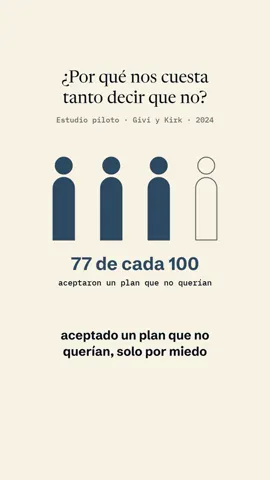
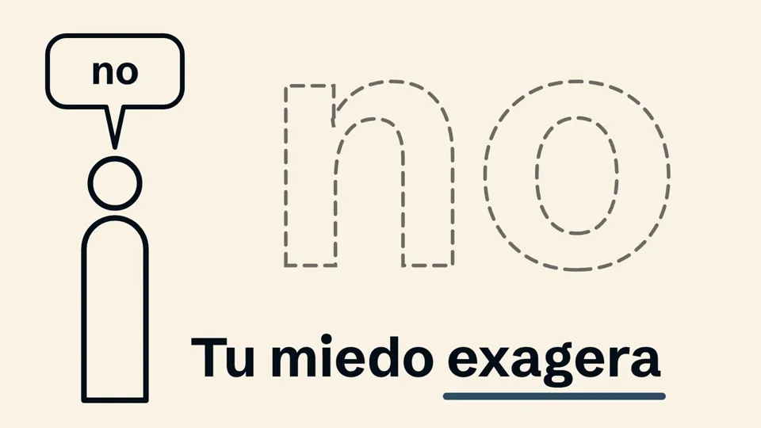

ProductividadEpisodio 24 de noviembre de 20264:31
Saber decir que NO
¿Por qué nos cuesta tanto decir que no?

Al pulsar «Ver aquí» se carga el reproductor de YouTube, en su modo de privacidad mejorada.
Una acción para esta semana
Antes de responder, pide tiempo.
La idea
Por qué cuesta tanto decir que no
¿Por qué nos cuesta tanto decir que no? Más de tres de cada cuatro personas han aceptado un plan que no querían, solo por miedo a decir que no. Ese miedo se puede medir, y es exagerado: un no cuesta menos de lo que temes.
En este vídeo: el estudio de Givi y Kirk que lo midió, por qué nos equivocamos tanto (la culpa anticipada de Walter Riso), por qué decimos que sí mucho más de lo que creen quienes nos piden, y una sola acción para la próxima petición: antes de responder, pide tiempo.
Tema
Etiquetas
- asertividad
- decir que no
- culpa
Seguir leyendo
El guion · 700 palabras
Lo que dice el vídeo
El texto del vídeo, tal cual, por capítulos. Pulsa un minuto para verlo en YouTube desde ahí.
0:00El miedo a decir que no
¿Por qué nos cuesta tanto decir que no? Un estudio piloto de Julian Givi y Colleen Kirk, de dos mil veinticuatro. Más de tres de cada cuatro participantes, setenta y siete de cada cien, reconocieron haber aceptado un plan que no querían, solo por miedo a decir que no.
El mismo estudio midió ese miedo. Y era exagerado.
0:25Un no cuesta menos de lo que temes
Decir que no cuesta menos de lo que temes. Un sí cuesta más de lo que parece: se paga en horas que todavía no ves. Con el no pasa al revés.
Su coste lo ves enseguida, y lo ves más grande de lo que es.
0:40El experimento de la cena
Con un experimento de lo más corriente, Givi y Kirk pusieron a prueba ese miedo. Una invitación: cenar el sábado en un restaurante con un chef conocido. Y un no: «He tenido un día muy largo.
Prefiero quedarme en casa». A unas personas les pidieron ponerse en el lugar de quien dice que no. A otras, en el de quien invita.
Quienes decían que no esperaban enfado, decepción, y que no les volvieran a invitar. Quienes invitaban se lo tomaban mucho mejor. Lo repitieron con parejas de verdad, con invitaciones de verdad.
Cinco experimentos, más de dos mil personas.
1:17Por qué nos equivocamos tanto
¿Por qué nos equivocamos tanto? Porque quien dice que no cree que el otro solo va a ver eso: el no. Y el otro piensa en otra cosa: en que te lo has pensado antes de decirlo.
«Estará cansada». «Ya iremos otro día». En «El derecho a decir no», Walter Riso le pone nombre a ese miedo: la culpa anticipada.
Nos sentimos culpables antes de haber hecho nada. Y propone la salida: la asertividad. Decir lo que quieres, o lo que no quieres, sin atacar al otro y sin someterte.
1:49Negarse incomoda: por eso ayudamos tanto
Hay un segundo dato, visto desde el otro lado. Seis estudios de Francis Flynn y Vanessa Lake, publicados en dos mil ocho, analizaron qué pasa cuando le pides ayuda a alguien directamente. La gente ayudaba mucho más de lo que esperaban quienes pedían: hasta el doble.
¿Por qué? Porque negarse incomoda, y esa incomodidad no la ve quien pide. La siente, y le pesa, quien recibe la petición.
2:14Menor, pero no gratis
Ojo: nada de esto dice que el no salga gratis. Los propios autores lo avisan: no rechaces todas las invitaciones; las relaciones se hacen pasando tiempo juntos. Lo que dicen es más útil: que el precio de un no es más pequeño de lo que lo pinta el miedo.
Y que muchas veces merece la pena pagarlo.
2:34El mapa: los dos costes
Este es el mapa completo. Un sí tiene un coste que no ves: lo que dejas de hacer. Un no tiene un coste que ves de más: lo que temes que piense el otro.
Con la balanza así, trucada por los dos lados, decimos que sí demasiadas veces. Y cada sí que das por miedo se paga como cualquier otro: en algo que todavía no ves.
2:57Pide tiempo
Entonces, ¿qué haces la próxima vez que te pidan algo? Una sola cosa. No contestes en el momento.
Pide tiempo. «Déjame que lo mire y te digo». En «Esencialismo», Greg McKeown lo recomienda: una pausa antes de contestar, para que el sí no salga solo.
La presión de una petición es más fuerte en el momento. Con un poco de tiempo, baja, y puedes hacer dos pruebas: ponerle precio en horas, y preguntarte si dirías que sí si fuera mañana.
3:26Un no, corto y amable
Y si después la respuesta es no, dilo corto y amable: «Esta vez no puedo. Gracias por pensar en mí». Y si de verdad quieres ayudar, ofrece lo que sí puedes: «esta semana no; la que viene, sí».
No hace falta un discurso. En «Cuando digo no, me siento culpable», Manuel J. Smith lo plantea como un derecho: no tener que justificarte.
El otro va a suponer que lo has pensado. Y esta vez, además, será verdad.
3:53Lo que te llevas
Para terminar, lo que te llevas de este vídeo. Una idea: un no cuesta menos de lo que temes. Una pregunta: ¿a qué le dijiste que sí solo por no quedar mal?
Una acción: antes de responder, pide tiempo. Las horas no son lo único que se te va sin verlo. También la atención.
De eso va el próximo vídeo.
4:31 · 10 capítulos
Capítulos, a escala
La línea es el vídeo entero; cada marca, un capítulo en su minuto.
- 010:00El miedo a decir que no
- 020:25Un no cuesta menos de lo que temes
- 030:40El experimento de la cena
- 041:17Por qué nos equivocamos tanto
- 051:49Negarse incomoda: por eso ayudamos tanto
- 062:14Menor, pero no gratis
- 072:34El mapa: los dos costes
- 082:57Pide tiempo
- 093:26Un no, corto y amable
- 103:53Lo que te llevas
En redes
La idea, en un minuto


De dónde sale
Libros y fuentes
Libros
- El derecho a decir noWalter Riso · Zenith, 2025
- EsencialismoGreg McKeown · Conecta, edición del 10.º aniversario
- Cuando digo no, me siento culpableManuel J. Smith · Debolsillo, 2024
Estudios y fuentes
- Givi y Kirk (2024). Saying no: The negative ramifications from invitation declines are less severe than we think. Journal of Personality and Social Psychology · doi.org/10.1037/pspi0000443
- Flynn y Lake (2008). If you need help, just ask: Underestimating compliance with direct requests for help. Journal of Personality and Social Psychology · doi.org/10.1037/0022-3514.95.1.128
- Para saber más, el experimento del «pepinillo»: Bohns, Roghanizad y Xu (2014). Underestimating our influence over others' unethical behavior and decisions. Personality and Social Psychology Bulletin · doi.org/10.1177/0146167213511825
Sigue con
Otras ideas
-
ProductividadNº 1
5:2128 oct
El coste real de decir que síEl coste de oportunidad
Una acciónAntes de tu próximo sí, ponle precio a la alternativa.
-
MenteNº 3
5:1311 nov
Por qué no puedes concentrarte (y no es por el móvil)
Una acciónAntes de cambiar, apunta dónde lo dejas.
-
AmbiciónNº 4
4:4718 nov
Abandonar a tiempo no es rendirse: la falacia del coste hundido
Una acciónAntes de seguir, pregúntate si lo empezarías hoy.

Newsletter gratuita
El ejercicio de cada vídeo, por escrito.
La idea de cada vídeo, con el ejercicio para aplicarla y los libros de donde sale.